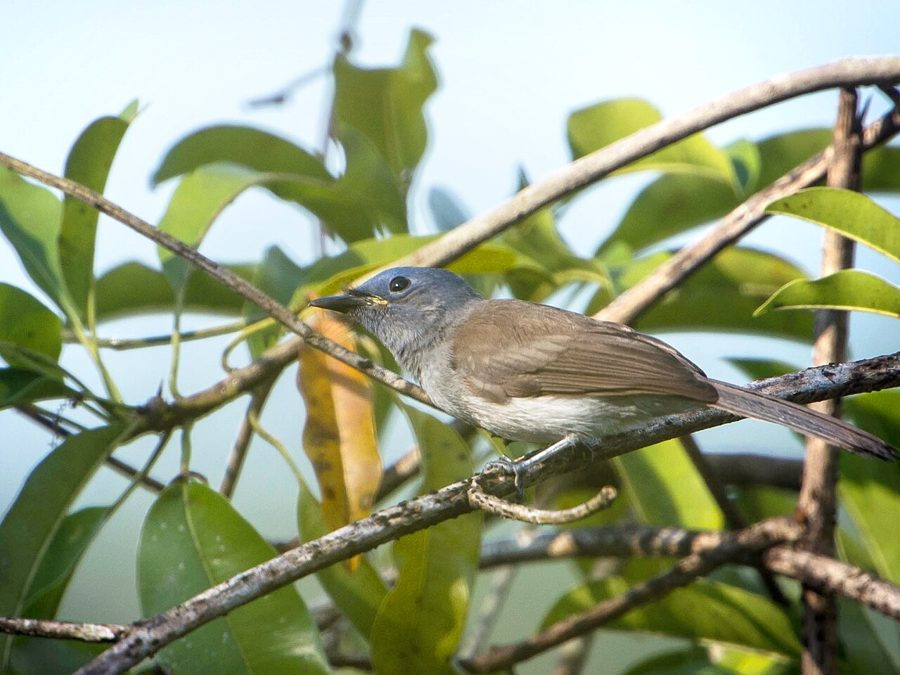

काला नचाने वालाBlack-naped Monarch
Hypothymis azurea · Monarchidae · BRD-0276

- Scientific name वैज्ञानिक नाम
- Hypothymis azurea (Boddaert, 1783)
- Family कुल
- Monarchidae
- Hindi हिंदी
- काला नचाने वाला
- Local names स्थानीय नाम
- black-naped monarch, kala kanta, neela phudki
- Status here यहाँ की स्थिति
- native
- Movement आवागमन
- Resident, here all year
- Known from कहाँ दर्ज
- Others have published records from the Basti–Ayodhya districts बस्ती–अयोध्या के ज़िलों से दूसरों के प्रकाशित अभिलेख
- IUCN IUCN
- not evaluated
- Review समीक्षा
- not yet reviewed
When to look कब देखें
Present all year. साल भर मौजूद।
Tell it apart from इनसे अलग पहचानें
काला नचाने वाला / Black-naped Monarch
Hypothymis azurea (Boddaert, 1783) — Monarchidae
काला नचाने वाला — घने बांस के झुरमुटों, नम जंगलों और पुराने बागों के निचले तल्ले में रहने वाला एक अत्यंत चंचल नीला फ़्लाईकैचर, जिसके नर के सिर के पीछे एक मखमली काला धब्बा और छाती पर काली पट्टी होती है।
Quick Identification त्वरित पहचान
| Feature | Description |
|---|---|
| Male color | Brilliant vivid azure-blue head, breast, and back with crisp white lower belly |
| Head marks | Velvety black patch on the nape and a thin black gorget across upper breast |
| Female color | Duller grey-blue crown, greyish-brown mantle and wings, lacking black markings |
| Bill & Gape | Broad cobalt-blue bill with black tip, surrounded by prominent stiff rictal bristles |
| Foraging style | Active sallying from shaded understorey perches, fanning tail and drooping wings |
Small, agile forest flycatcher of deep shady thickets. The male is striking cobalt-blue with a velvety black patch on the nape, a narrow black gorget across the throat, and a white lower belly. The female has a grey-blue crown and throat, dull greyish-brown back and wings, and lacks both the black nape patch and breast band. Both sexes have cobalt-blue bills and frequently fan their graduated tails while flicking through dense undergrowth.
हिंदी: घने साएदार पेड़ों में फुदकने वाली चमकीली नीली चिड़िया। नर के सिर के पीछे काला धब्बा और छाती पर पतली काली पट्टी होती है; मादा की पीठ भूरी होती है और उसमें काले निशान नहीं होते।
Morphology शारीरिक संरचना
| Feature | Description | Source |
|---|---|---|
| Male head pattern | Velvety black patch on the nape and narrow black gorget line | Rasmussen & Anderton (2012) |
| Bill coloration | Vivid cobalt-blue with dark culmen tip and yellow interior gape | Rasmussen & Anderton (2012) |
| Female coloration | Duller greyish-blue head, grey-brown mantle, unstreaked white belly | Grimmett et al. (2011) |
The adult male has brilliant cobalt-blue plumage on the head, throat, upper breast, mantle, and rump. A distinct, velvety black circular patch sits prominently on the nape, and a narrow black crescent or gorget borders the lower throat. The lower belly and undertail coverts are contrasting pure white. The bill is broad at the base, vivid cobalt-blue, and fringed with stiff rictal bristles. Iris dark brown with a pale blue orbital ring; legs dark slate-blue. The female is significantly duller: the head is greyish-blue, the mantle and back are dull earthy grey-brown, the breast is washed with pale grey, and the black nape and throat markings are completely absent.
Vocalisations. Distinctive and vocal in dense cover, emitting a sharp, metallic, whistling double-note sweeep-sweeep or pwee-pwee. When agitated, it utters a rapid scolding churring sound ch-ch-ch-ch reminiscent of a fantail.
हिंदी: नर का शरीर गहरा नीला होता है, माथे और छाती पर काला निशान होता है तथा निचला पेट सफेद होता है। मादा की पीठ भूरी होती है। चोंच नीली होती है जिसके आधार पर बारीक बाल होते हैं।
Behaviour & Ecology व्यवहार एवं पारिस्थितिकी
An energetic and restless understorey insectivore that inhabits the darkest, shadiest microhabitats of woodlands and bamboo brakes. It rarely ascends to the sunlit upper canopy, preferring tangled foliage between 1 and 5 m above ground (Ali & Ripley 1983). While foraging, it droops its wings, fans out its graduated tail, and makes rapid darting flights to snap up flying insects, twisting deftly through dense twigs and returning to a low perch to process its catch. It is strictly territorial and lives in monogamous pairs that defend the same woodland territory year-round.
हिंदी: यह वनों और बगीचों के निचले अंधेरे हिस्सों में फुदकती है। यह अपनी पूंछ को पंखे की तरह फैलाती है, पंखों को हल्का नीचे झुकाती है और हवा में कलाबाजी खाते हुए उड़ते कीड़ों को पकड़ती है।
Life Cycle / Phenology जीवन चक्र एवं फेनोलॉजी
The breeding season extends from April to August across northern and central India. The nest is an exquisite, deep, conical cup fashioned from fine grass stems, moss, and bark fibers, coated heavily on the outside with silky white spider egg-cocoons and cobwebs (Ali & Ripley 1983). It is suspended neatly in a slender vertical or horizontal tree fork, usually 2 to 6 m above the forest floor (Ali & Ripley 1983). The female lays a clutch of 3 eggs, pale pinkish or creamy-white with fine reddish-brown speckles forming a wreath around the broad end (Ali & Ripley 1983). Both parents incubate the eggs for 14 to 15 days and cooperate in brooding and provisioning the young (Ali & Ripley 1983).
हिंदी: प्रजनन काल अप्रैल से अगस्त तक होता है। पेड़ की पतली शाखाओं के दोराहे पर मकड़ी के जालों और काई से एक बेहद खूबसूरत प्यालेनुमा घोंसला बनाया जाता है जिसमें 3 अंडे दिए जाते हैं।
Diet and Feeding Behaviour आहार एवं भोजन व्यवहार
Strictly insectivorous. It preys on small winged insects, particularly midges, mosquitoes, flies, small moths, winged ants, winged termites, and small beetles. It uses aerial hawking, sallies from concealed perches, and flutter-gleaning against broad leaves to capture prey. Its broad bill and dense array of stiff rictal bristles act as an effective scoop to secure flying insects in mid-air.
हिंदी: इसका आहार केवल कीड़े-मकोड़े हैं, विशेषकर मच्छर, मक्खियां, छोटे पतंगे और उड़ने वाली चींटियां। यह पत्तों के पास हवा में उड़ते हुए कीड़ों को अपनी चौड़ी चोंच से झपटकर पकड़ती है।
Predators / Natural Enemies प्राकृतिक शत्रु एवं शिकारी
Because of its low nesting height and active behaviour in dense undergrowth, it is exposed to small forest predators. Nests are preyed upon by tree snakes such as the bronze-backed tree snake (Dendrelaphis tristis), garden lizards (Calotes versicolor), and rodents. Adults are occasionally ambushed by the Shikra (Accipiter badius) or the Greater Coucal (Centropus sinensis). Parents actively distract intruders near the nest by performing flutter displays and sounding alarm churrs.
हिंदी: झाड़ियों में नीचे घोंसला होने के कारण अंडों को पेड़ के सांपों, गिरगिटों और चूहों से खतरा रहता है। शिकरा और महोख जैसे पक्षी वयस्कों पर हमला करते हैं।
Agricultural / Human Relevance कृषि एवं मानव उपयोगिता
Highly beneficial to agricultural landscapes and rural settlements adjacent to woodlands by devouring immense numbers of biting mosquitoes, midges, and pestiferous agricultural flies. By maintaining residency in traditional mango orchards and farm windbreaks, it serves as an effective natural biological regulator of dipteran pests without harming fruit crops.
हिंदी: यह मच्छरों, मक्खियों और बागों में लगने वाले बारीक हानिकारक कीड़ों का भारी संख्या में शिकार करके मानव स्वास्थ्य और पर्यावरण के लिए बहुत मददगार साबित होती है।
Expected Locally क्षेत्रीय संभावना
Not a field record. Written from published accounts for eastern Uttar Pradesh. No confirmed local sighting yet — if you have seen it, that is what the atlas needs.
अभी तक स्थानीय पुष्टि नहीं। यह विवरण प्रकाशित स्रोतों से है, किसी अवलोकन से नहीं।
GBIF holds published records from forested areas and riverine belts across eastern Uttar Pradesh, particularly in protected sal tracts and foothill forests of the Terai. It is expected in old-growth mango orchards with dense understories, riverine gallery forest along the Kuwana and Manwar rivers, and dense bamboo groves. A confirmed local record requires a clear photograph showing the male's black nape patch and gorget or female plumage details with observation date and location.
हिंदी: यह तराई और पूर्वी उत्तर प्रदेश के घने बागों, बांस के झुरमुटों और नदी कछारों में संभावित है। पुष्टि के लिए सिर का काला धब्बा दर्शाने वाली स्पष्ट तस्वीर आवश्यक है।
Distribution वितरण
Broadly distributed throughout the Oriental realm, including the Indian subcontinent, Sri Lanka, southern China, Southeast Asia, and the Indonesian archipelago. Within northern India, it occurs along the Himalayan foothills, the Gangetic floodplain wherever mature wooded cover persists, and across moist forested tracts of central India.
हिंदी: यह पूरे भारतीय उपमहाद्वीप, दक्षिण-पूर्व एशिया और इंडोनेशिया के वनों में पाई जाती है। उत्तर भारत में यह घने बगीचों और नदी तटीय वनों में सीमित है।
Research Questions शोध प्रश्न
- What structural characteristics of the shrub undergrowth determine territory selection in managed mango orchards versus natural riverine woodlands?
- Does the local population exhibit any seasonal elevational movements or remains strictly sedentary throughout cold winter months?
- How effectively does the species control mosquito and biting fly populations in rural village groves?
- What are the key materials utilized in constructing the external camouflage of the nest cup?
- क्या सर्दियों में अत्यधिक ठंड के दौरान यह अपनी भोजन तलाशने की रणनीति में बदलाव लाती है?
- क्या ग्रामीण इलाकों में बागों की कटाई और झाड़ियों की सफाई से इसकी संख्या में गिरावट आ रही है?
Similar Species समान प्रजातियाँ
| Similar species | Distinction | Hindi distinction | |
|---|---|---|---|
| Verditer Flycatcher \ | Eumyias thalassinus | Lacks black nape patch and breast gorget; uniform shimmering copper-green or turquoise; uncrested | वर्डीटर फ़्लाईकैचर के सिर पर काला धब्बा नहीं होता और इसका पूरा शरीर चमकीला फिरोजी-हरा होता है |
| Tickell's Blue Flycatcher \ | Cyornis tickelliae | Bright blue upperparts with bright rufous throat and breast, contrasting with white belly | टिकेल के नीले फ़्लाईकैचर का गला और छाती गहरा नारंगी-कत्थई होता है |
| Indian Paradise Flycatcher \ | Terpsiphone paradisi | Larger bird with glossy black crested head and blue eye-ring; males possess extraordinarily long tail streamers | दूधराज के सिर पर काली कलगी होती है और नर के पास अत्यंत लंबी सफेद या कत्थई पूंछ की पट्टियां होती हैं |
Field rule: Vibrant cobalt-blue flycatcher of shaded understorey; male has velvety black nape patch, black throat crescent, and white belly; female grey-brown with grey-blue head.
हिंदी: घनी छांव में रहने वाला चमकीला नीला फ़्लाईकैचर; नर के सिर के पीछे काला धब्बा और छाती पर काली पट्टी होती है; मादा की पीठ भूरी होती है।
Taxonomy & Classification वर्गिकी एवं वर्गीकरण
Original description. Boddaert (1783), Table des Planches Enluminéez d'Histoire Naturelle de M. D'Aubenton, p. 41; type locality: Philippines.
Subspecies. The subspecies inhabiting northern and central India is Hypothymis azurea styani (Hartlaub, 1898).
Family and order placement. Placed in the monarch flycatcher family Monarchidae, order Passeriformes.
IUCN status rationale. Not evaluated by the IUCN Red List; widely distributed across South and Southeast Asia with stable forest populations.
हिंदी: बोडार्ट ने 1783 में इसका पहला वैज्ञानिक विवरण दिया था। यह मोनार्क फ़्लाईकैचर कुल (मोनार्किडे) का सदस्य है और पूरे दक्षिण एशिया में पाया जाता है।
Photo Gallery फोटो गैलरी
No photos yet — add field photos to media/species/black_naped_monarch/ and run node scripts/sync_photos.js.
Photos needed आवश्यक फोटो
- [ ] Adult male perched on shaded branch showing velvety black nape patch and cobalt plumage (छायादार शाखा पर बैठे नर के सिर के काले धब्बे और नीले रंग का दृश्य)
- [ ] Adult female foraging in undergrowth displaying greyish-brown upperparts (निचले तल्ले में भोजन तलाशती मादा के भूरे ऊपरी शरीर का दृश्य)
- [ ] Male sallying after winged insect in mid-air with fanned tail (उड़ते हुए कीड़े पर झपट्टा मारते नर पक्षी की फैली पूंछ का दृश्य)
- [ ] Distinctive cup nest bound with spider egg-cocoons in tree fork (मकड़ी के जालों से लिपटा हुआ पेड़ के दोराहे पर बना प्यालेनुमा घोंसला)
- [ ] Shaded understorey habitat in mature riverine woodland or bamboo grove (नदी तटीय जंगल या बांस के झुरमुट का साएदार प्राकृतिक वास)
References संदर्भ
- Original description: Boddaert, 1783 — see GBIF.
- Grimmett, R., Inskipp, C. & Inskipp, T. (2011). Birds of the Indian Subcontinent. Christopher Helm, London.
- Rasmussen, P. C. & Anderton, J. C. (2012). Birds of South Asia: The Ripley Guide. Vols. 1 and 2. Lynx Edicions, Barcelona.
- Ali, S. & Ripley, S. D. (1983). Handbook of the Birds of India and Pakistan. Compact ed. Oxford University Press, New Delhi.
- GBIF Occurrence Data — Hypothymis azurea, India (2025).
Source file: species/fauna/birds/black_naped_monarch.md